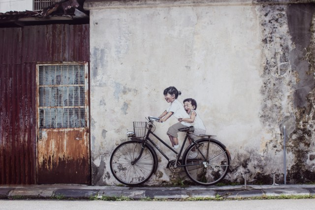
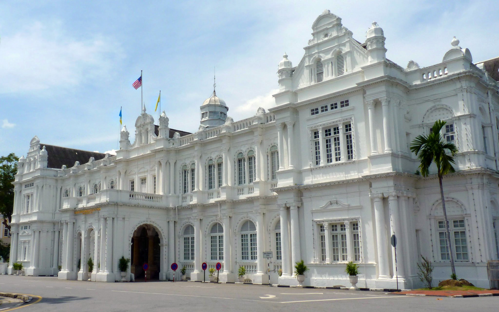
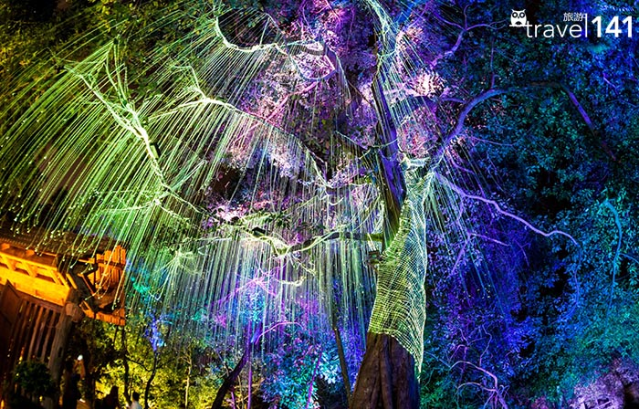
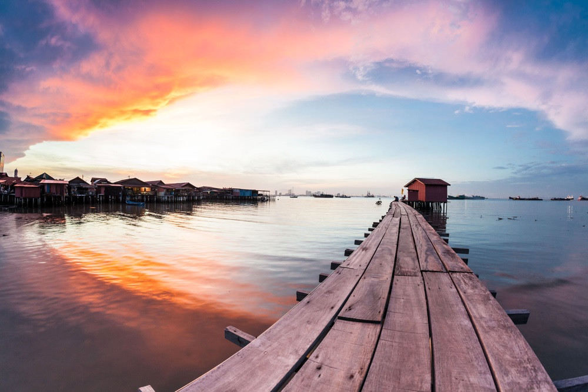

馬來西亞檳城藝術壁畫。喬治市的壁畫其實是起沿於2012年的喬治市魔鏡企劃(Mirrors Georgetown)，由立陶宛畫家Ernest Zacharevi的傑作，五幅知名壁畫：姐弟共騎、功夫女孩、漁船小孩、爬牆小孩以及追風少年，讓檳城掀起壁畫風潮，更是觀光客必訪喬治市的景點。,000平方米，为该国乃至东南亚规模最大与建筑最宏伟的华人佛寺。该寺名称取自“西方极乐世界”，其落成标志着汉传佛教伽蓝在南洋的开拓，是汉土与海外华人间的文化纽带。
槟城大会堂

槟城大会堂（City Hall）是马来西亚槟城乔治市的一座市政建筑，曾是乔治市市议会所在地。槟城大会堂位于海滨，建于1903年，两层，爱德华巴洛克式建筑。由于毗邻的市政厅（Town Hall）承担了较多的社会功能，因而对办公空间产生了需求。1982年，槟城大会堂被列为国家文物。
Avatar Secret Garden

电影主题的秘密花园，布满了 LED 霓虹灯，沙滩上有一些雕像，并且可以欣赏到摩天大楼天际线景观。
姓氏橋

马来西亚槟城州槟岛东北部海边的海上桥状木屋区，各桥主要以姓氏宗亲分而聚居，最长的木桥向海延伸约500米，有者较短，左右建满了木屋。原本共有9座姓氏桥，但在城市发展巨轮下有两座姓氏桥被拆除兴建成中廉价组屋。 姓氏桥为乔治市的一部分，而乔治市在2008年被联合国教科文组织列入世界文化遗产。